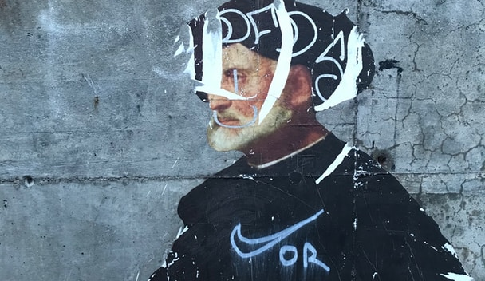
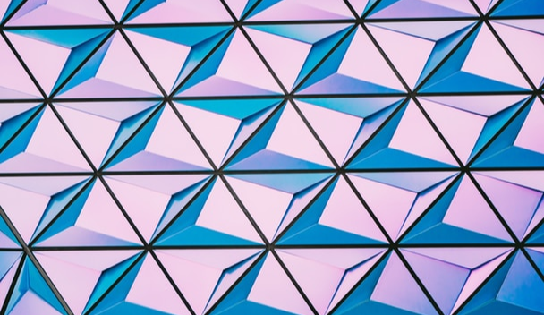
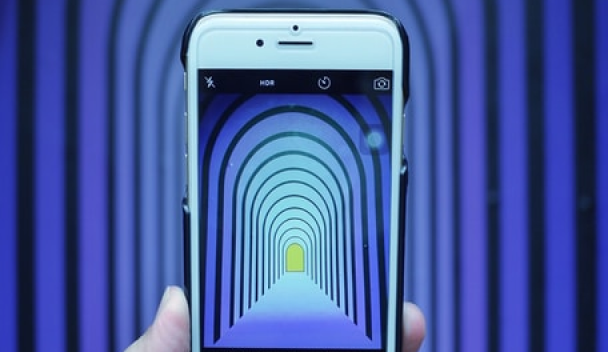
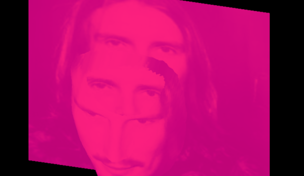
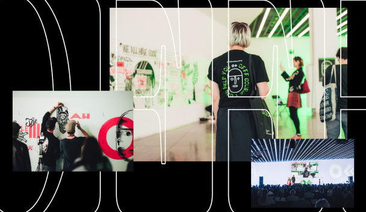

What to read next

Here are some things you should know regarding how we work

Hello World, or, in other words, why this blog in other words, why this blog exists

Hello World, or, in other words, why this blog exists
Updating list of 50+ sources on distributed teams, remote work, and how to make it all work better

Updating list of 50+ sources on distributed teams, remote work, and how to make it all work better
